Santa Maria - RS
A mesa está posta
para você.
Cozinha italiana feita em casa, sem pressa e com carinho.
Reserve bons momentos
Atendemos sábados, domingos e feriados, das 11h às 15h.
A casa
Uma casa, não só um restaurante.
Cozinha italiana de raiz familiar, com massas feitas à mão, molhos preparados com calma e um salão pronto para receber.
Nosso objetivo é simples: fazer cada visita parecer um encontro em família.
Desde 1978
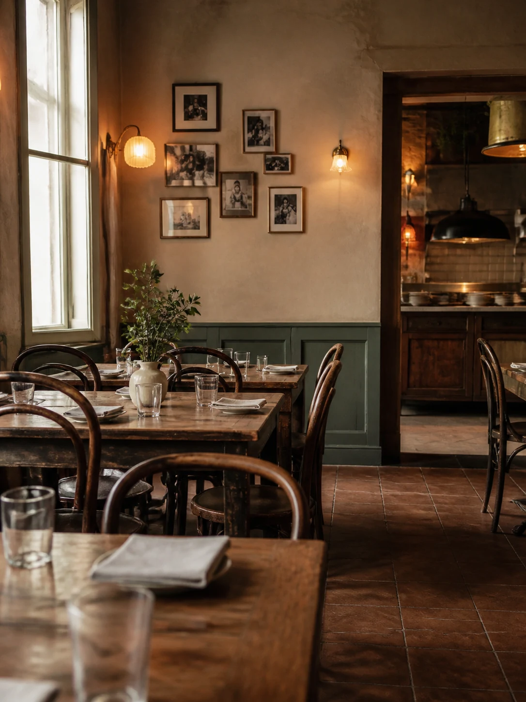
À mesa
Cozinha italiana servida sem pressa.
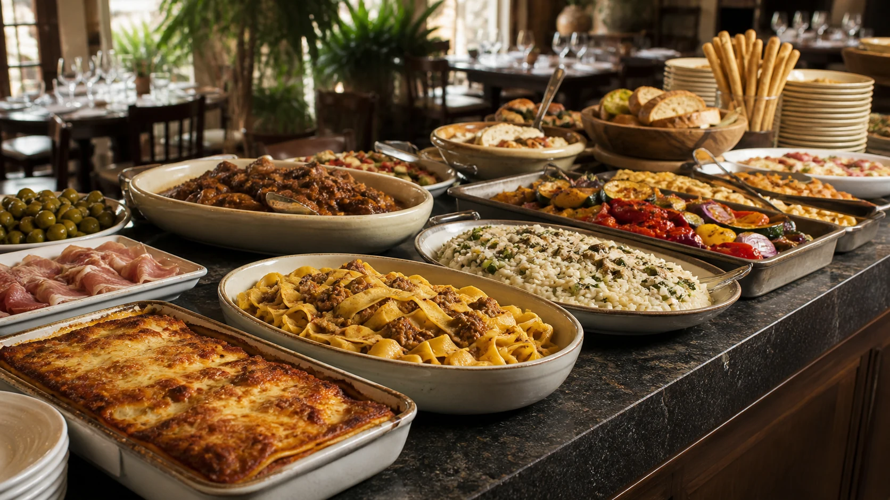
Para começar
Antepastos, pães e frios para abrir o apetite.
O banquete
Massas, risotos e carnes para compartilhar.
Para terminar
Doces da casa e café para fechar a refeição.
Nosso cardápio
Sabores da nossa casa
Buffet livre
- Tábuas de frios, saladas e antepastos
- Risotos e massas artesanais
- Lasanha à bolonhesa e ravioli ao sugo
- Carnes assadas e acompanhamentos
- Sobremesas e café da casa
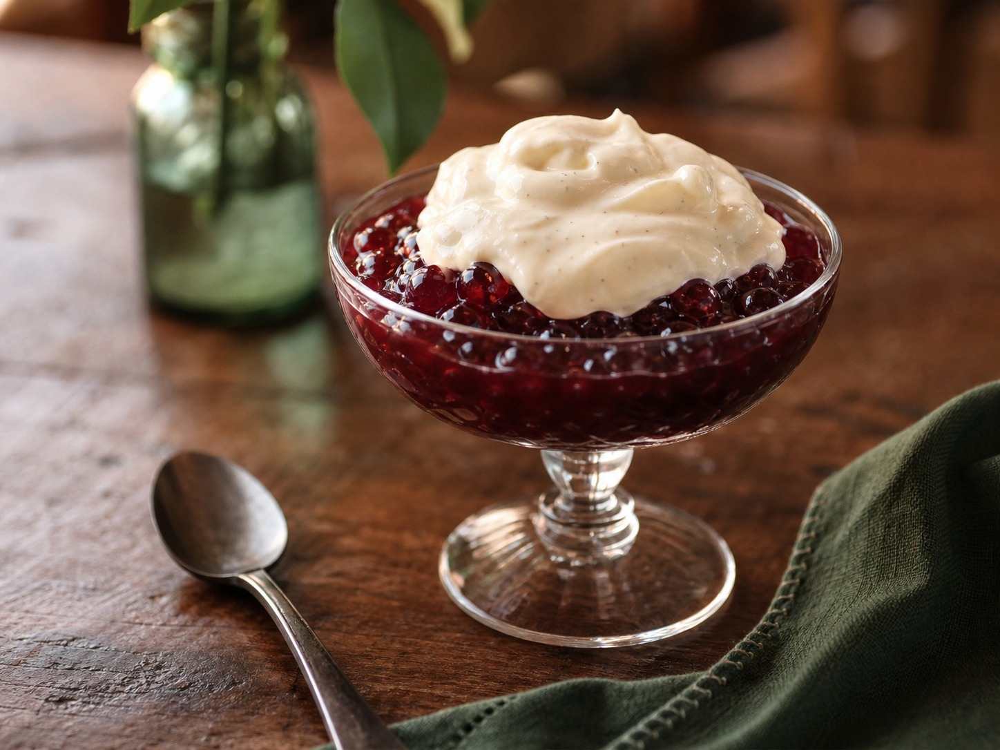
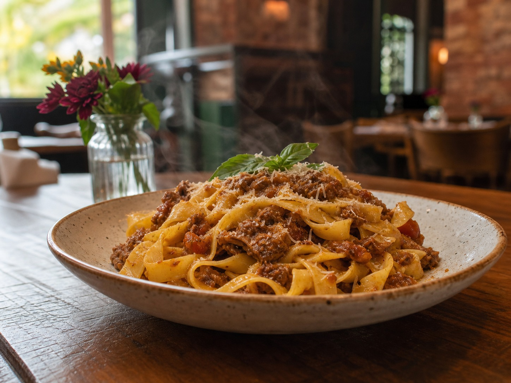
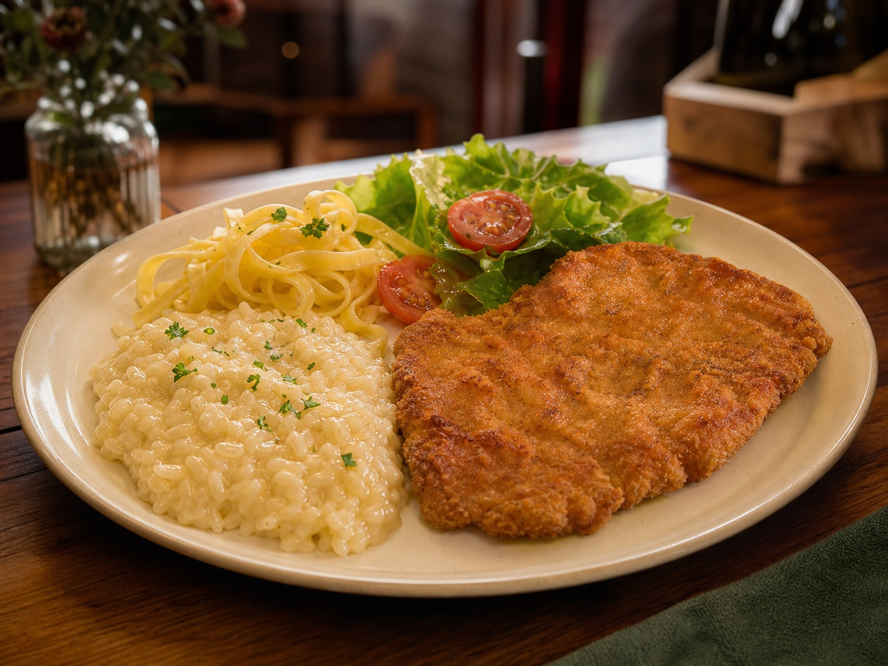
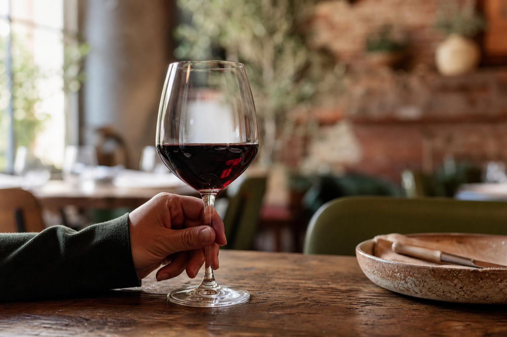
Para brindar
Vinho, conversa e boa companhia.
Uma seleção simples para acompanhar a refeição e deixar a mesa ainda melhor.
Nossa história
Receitas que atravessam gerações.
O restaurante nasceu da vontade de reunir pessoas ao redor de uma boa mesa. Mantemos esse cuidado em cada prato servido.
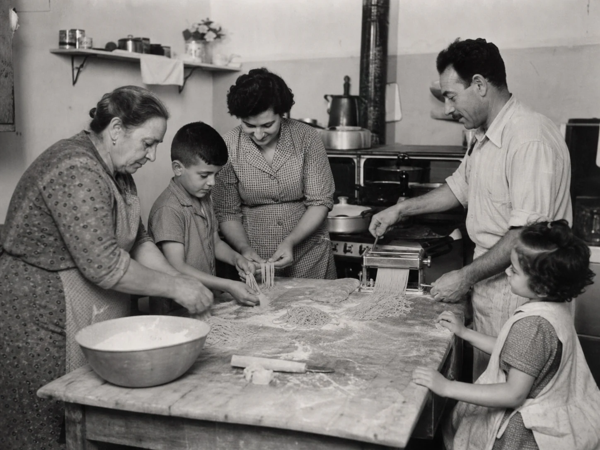
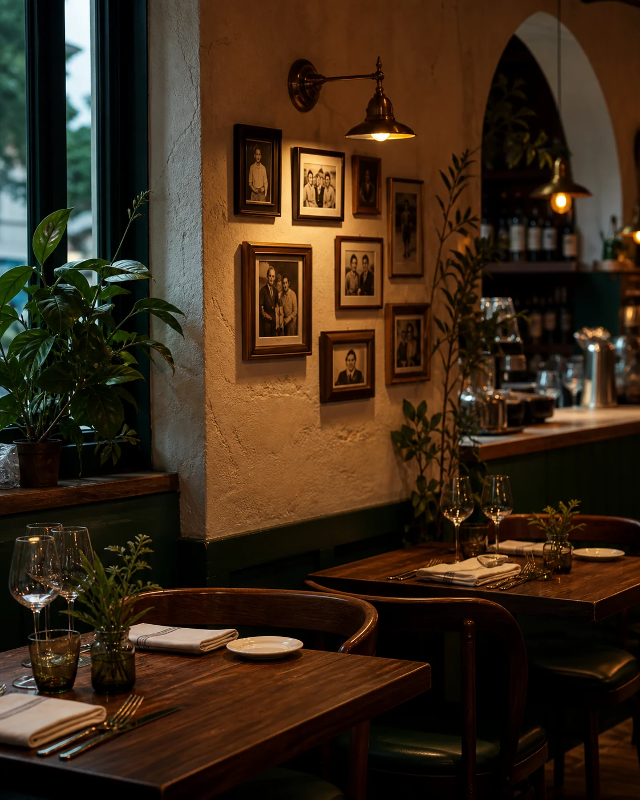
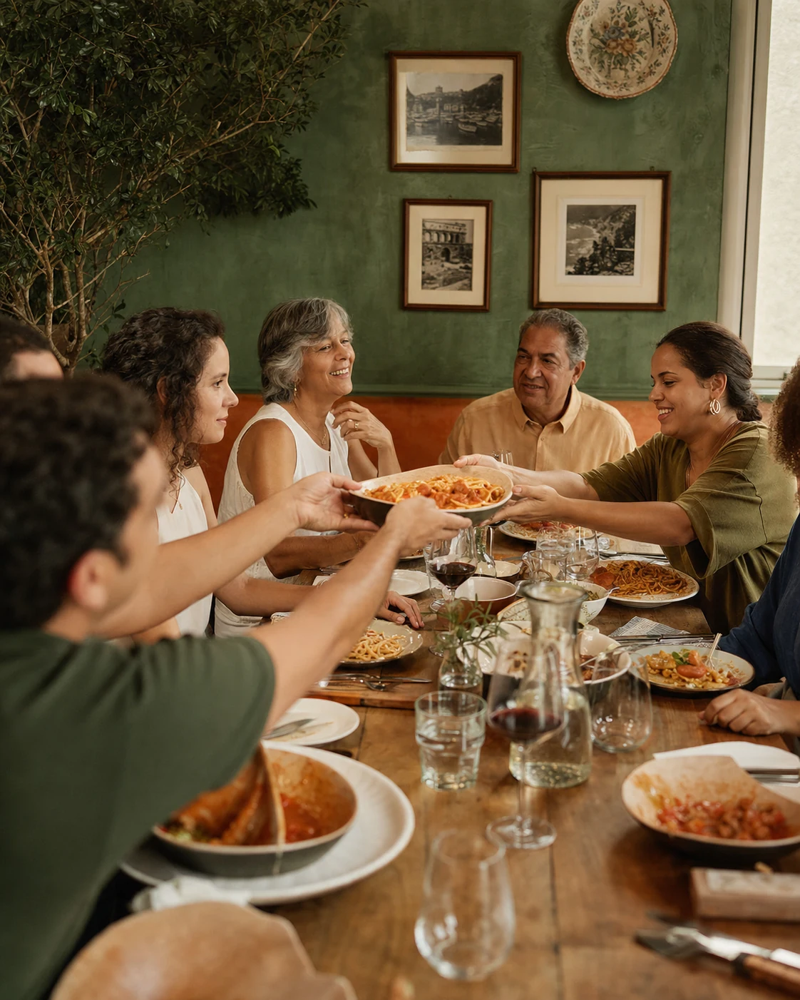
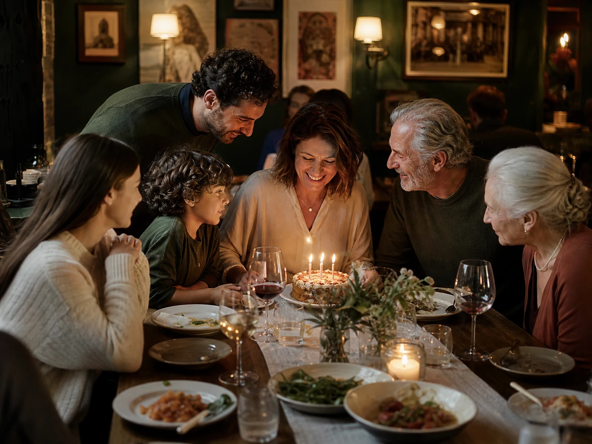
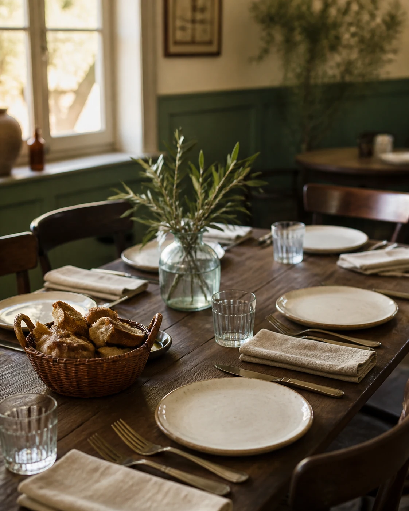
Visite-nos
Uma mesa esperando por você.
Rua Itália, 100 · Santa Maria - RS
Sábados, domingos e feriados · 11h às 15h